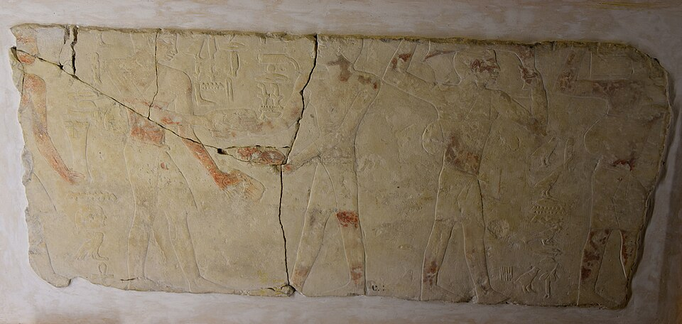

Мастаба
«Скамья» в пустыне · пер-джед — «дом вечности» · холм, где ка не гаснет

«Скамья» вечности
Мастаба — от аравийского مصطبة «скамья»; по-египетски её звали пер-джед — «дом вечности». Древнейший тип египетских гробниц: над землёй — усечённая пирамида над шахтой, под ней — погребальная камера.
Форма не случайна: древние связывали гробницу с первозданным холмом — первым сухим островом из вод Нуна. Мастаба — такой каменный холм: не размывается, не стареет, и ка умершего в ней не гаснет.
Форма и внутреннее устройство
Мастаба складывается из двух частей — наземной и подземной. Опоры из дерева или сырца перекрывали бутовой кладкой, сверху — кирпич или тёсаный камень. Шахта ведёт к погребальной камере с мумией; камер могло быть несколько, некоторые закрывались опускающимися плитами.
В наземной части стояла молельня — сердаб: запертая камера со статуей умершего, его «ка». Если мумия повреждалась, душа могла переселиться в статую и жить дальше. Узкая щель в стене давала статуе «всматриваться» в подношения, а в камеру проникал дым благовоний.
Дверь между мирами
На стене молельни — ложная дверь: каменный порог без проёма. Египтяне видели в ней «дверь между мирами»: через неё ка проходило из мира живых в мир мёртвых, а подношения, возложенные перед порогом, доставались покойнику. Ложная дверь впервые появляется при III династии и становится постоянным элементом гробниц IV–VI династий.
Некрополи Саккары и Гизы
Крупнейшие некрополи мастаб выросли в Саккаре и Гизе — рядом с царскими пирамидами: знатных хоронили подле государя, чтобы ка вельможи продолжало служить и в загробном мире. Мастаба визиря Мереруки (VI династия) насчитывает около тридцати трёх залов — молельни, склады и дворы. Славятся рельефы гробницы номарха Ти: бегемот, которого пронзают на озере, работа ремесленников, полевая жатва.
От мастабы к пирамиде
Из мастабы родилась пирамида: Имхотеп поставил шесть «скамей» одна на другую для фараона Джосера — и возникла ступенчатая пирамида Саккары, первое гигантское каменное здание в истории. Затем ступени сгладили в конусы Гизы; мастабы же строили ещё тысячелетие.